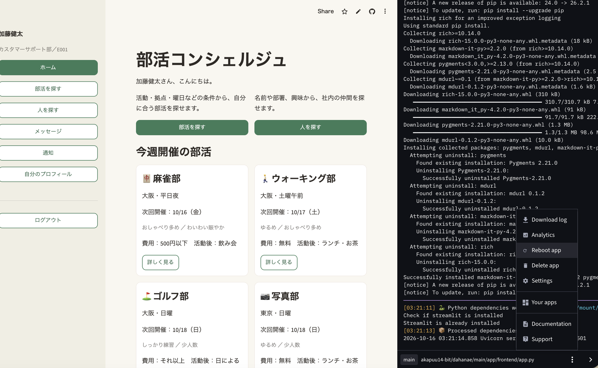

アクセススピード改善ナレッジ（遅い画面を数えて直した話）
【確認状況】 推定は「推定」、未確認は「未確認」と書きます。時間を測ったのは代表11遷移のみ・各2回です。未確認事項の全体は、最終報告（17-final-report.md の7章）にまとめてあります。
背景: 「遷移が遅い」と言われた。でも「遅い」の基準がなかった
発表後（2026-10-15）に、TA（ティーチングアシスタント）ののんちゃんから、次のフィードバックが出ました。
「Streamlit Cloud で全画面の遷移が遅い、検索も表示も」
要求・要件に、速度の定義がなかった
非機能要件（N-01〜N-14）に、速度（応答時間・待ち時間）の項目は1つもありませんでした。具体的には、次の2つが、どの文書にも書かれていませんでした。
- 時間: 「画面を切り替えて、何秒以内に表示されれば合格か」
- 回数: 「1回の操作で、データベースに何回まで問い合わせてよいか」
基準がないと、「遅い」と言われても、直す側はどこまで直せば終わりかを決められません。そもそも、今の状態が基準を満たしているのかも判定できません。のんちゃんの指摘は、文書にない基準を、実際に使った人の感覚が先に示した、という形になりました。
この時点で分かっていたこと
st.cache_*（Streamlit のキャッシュ機能）は 0 件でした。- Supabase は東京、インスタンスは NANO、CPU 使用率は 2%（測定した日時・方法は不明）。
- 数値の計測値は、フィードバックに付いていませんでした。
そこで「感覚で直す」のをやめて、測る → 原因を絞る → 目標を決める → 直す → 同じ方法で測り直すという順番で進めました（段階0〜8）。
原因を絞る（1）: 仮説を立て、確かめるために「往復」を数えた
「遅い」の原因を、感覚ではなく順番に絞るために、まず原因の仮説を4つ立てました（段階0。立てた時点では、どれも未検証）。
| 仮説 | 具体的には | もし本当なら |
|---|---|---|
| H1 距離 | 画面を動かす Streamlit Cloud は米国にあり（場所は変えられない）、データを持つ Supabase は東京にある。1回データベースに聞くたびに、国をまたぐ分だけ待たされる | 聞く回数が多いほど遅い。1回あたりが長い |
| H2 キャッシュなし・全体を再実行 | Streamlit は操作のたびに app.py を先頭から実行し直す。しかも、結果をおぼえておく仕組み（キャッシュ。st.cache_*）が 0 件で、同じことを何度も聞き直している | 同じ内容を、毎回聞いている |
| H3 二重実行 | 画面を切り替えるとき、st.rerun によって、同じ実行が2回走る | 聞く回数が、そのまま2倍になる |
| H4 Supabase の性能 | Supabase のインスタンス（NANO）が非力で、1回の問い合わせが遅い | 1回あたりが長い（ただし CPU 使用率 2% のため、主因ではない見込み。見込みであって確認ではない） |
どう確かめるか: まず「往復の回数」を数える
H1〜H3 は、どれも「データベースへの問い合わせの回数が多い」ことで遅くなる、という点でつながっています（この整理は書記の見立てです）。一方で、1回あたりの実時間（H1・H4）は、一度も実測できていません。そこで、手元で何度でも同じように数えられる「往復の回数」から調べました。
往復とは、Cloud から Supabase へ「この情報をください」と聞いて、答えが返ってくるまでの1回です。（補助のたとえ: 米国の事務所から東京の倉庫へ電話して、答えを聞いて切るまでが1回。電話の回数が増えるほど待たされます。）
数えて分かったこと①: サイドバーが、画面を切り替えるたびに3回聞いている
Streamlit は、ボタンを押すなど操作があるたびに、app.py を先頭から実行し直します（H2）。app.py の main() は、ログイン中なら、まず画面の左のサイドバーを作ります。サイドバーには「未読件数」と「『部活の管理』を出すか（権限）」が要るので、その値をデータベースに聞きます。改修前のコードは次のとおりでした（app/frontend/app.py の _render_sidebar、D-06 の変更前。要点のみ抜粋）。
sidebar.render(
...
unread_count=notification_service.count_unread(employee_id), # 往復1: 未読件数
can_manage=(
auth_service.get_role(employee_id) == auth_service.ROLE_ADMIN # 往復1: 社員の権限
or auth_service.is_organizer(employee_id) # 往復1: 幹事か（運営者なら省略）
),
)つまり、画面の中身とは関係なく、画面を1回表示するたびに、サイドバーだけで3往復が走ります（運営者は、権限が1回目で決まり、幹事の確認が省略されるので2往復）。
しかも、画面の切り替え（state.go）では、画面が2回描き直されることが分かっています（H3。仕組みは確認済み）。2回とも、サイドバーを作り直します。
[ボタンを押す: 画面を切り替える]
│
├─ 1回目の実行 ─ サイドバーを作る ─┬ 未読件数 …… 往復1
│ ├ 権限（get_role） …… 往復1
│ └ 幹事か（is_organizer） …… 往復1 ← 運営者は省略
│ └ 画面の中身を作る …… 画面ごとの往復
│
└─ 2回目の実行（st.rerun で描き直し）─ サイドバーをもう一度 …… 往復3
画面の中身（改修前は、ここでも読む画面あり）
サイドバーだけで 3往復 × 2回 = 6往復（運営者は 2往復 × 2回 = 4往復）だから、実際の遷移は次のようになりました。たとえば「ホーム→通知」は7往復で、そのうち6がサイドバーです（7−6の引き算）。「ホーム→部活を探す」は8往復で、うち6がサイドバーです。画面の中身が軽くても、サイドバーの6往復は毎回かかるので、どの遷移も一定以上は遅くなります。これが、「全画面の遷移が遅い」と感じられた理由の1つ（推定）です。
目安の計算（実測ではありません）: 見かけの1往復は最大でも約0.26秒（2069ms÷8往復。Streamlit 側の時間を含む「上限の目安」。実際の1往復はこれより短い）。これで 6往復×0.26秒＝最大でも約1.6秒が、サイドバーだけで毎回かかっていた、と見積もれます。1往復の実時間は、一度も実測していません。
数えて分かったこと②: 往復が増える原因は、サイドバーだけではない
偽データのアプリで、画面が使う問い合わせの回数を数えました（本番の規模での数え直しは未確認）。仮説になかった候補も見つかりました。
| 見つけたこと | 中身 |
|---|---|
| C1 サイドバーが毎回聞く | 上の仕組み。遷移1回あたり6往復（運営者は4） |
| C5 件数に比例して増える（N+1） | 「部活1つにつき問い合わせ1回」のような作りだと、部活が増えるほど往復が増える。ホーム・人を探す・部活の管理・メッセージ・部活詳細・プロフィールの6画面で確認 |
| C6 表示のたびに書込みが走る | 部活検索・部活詳細・メッセージ画面で、表示の途中に書込みが1往復 |
| C8 Streamlit 側の実行・描画の時間 | 往復では説明できない固定の時間。この時点では数えられず、改修後に「残っている可能性がある」と分かった |
結果として、1回の遷移で3往復以内に収まるものは、改修前は0件でした（部活を探すは8往復、人を探すは24〜36往復）。本番 DB に対する時間の計測は、途中で打ち切りました（人間の判断）。そのため、DB 側の処理時間とネットワークの時間は分けられていません。
原因を絞る（2）: 仮説は、どこまで確かめられたか（度合い）
改修後の測定（16-before-after.md）と最終報告から、仮説と候補の「度合い」を、次の4段階にまとめました。記号だけでなく、言葉も併記しています。
凡例（◎○△×の目安は書記が設定。決まった基準ではありません）
- ◎ 大きく効いた: 関係する遷移で、時間が約8割以上短縮し、往復も減った。
- ○ 効いた（中程度）: 時間が約4〜7割短縮した。
- △ 少し・推定どまり: 効いた形跡はあるが、推定どまり。（分離不可）は、D-06・D-07・D-08 を同時に入れたため、単独の効果を分けられないもの。
- × 未検証・未対策: 確かめていない、または対策をしていない。
| 仮説・候補 | 度合い | 根拠（一言） |
|---|---|---|
| H1 距離 | △ 推定どまり（分離不可） | 往復を減らすと時間が大きく減った（⑫ 27〜39往復→11、約6.5秒→約0.4秒）ので、往復回数が主因だったことは支持される。ただし距離だけの寄与は分けられない（D-10 をしていない） |
| H2 キャッシュなし・全体を再実行 | △ 推定どまり（分離不可） | 仕組みは確認済み。D-07 を入れたが、D-06・D-08 と同時で、キャッシュ単独の効果は出せない。キャッシュの命中率は Cloud で未測定 |
| H3 二重実行 | × 未対策 | D-09 を実施していないので、再実行2回の構造は残っている（推定） |
| H4 Supabase の性能 | × 未検証 | 1往復の実測がない。③⑭が H4 か C8 かは分けられない |
| C1 サイドバーの固定往復 | ○ 効いた（中程度） | 往復 ① 8→2、④ 7→2。時間 ① 約1.4秒→約0.7秒（約51%短縮）、④ 約1.4秒→約0.9秒（約38%）。D-06・D-07・D-08 の合計の値で、D-06 単独は分離不可 |
| C5 件数に比例する往復（N+1） | ◎ 大きく効いた | 往復 ⑫ 27〜39→11、② 24〜36→8。時間 ⑫ 約6.5秒→約0.4秒（約93%）、② 約6.5秒→約1.0秒（約84%）。3方式の合計の値で、D-08 単独は分離不可 |
| C6 表示時の書込み | △ 推定どまり | ③ 約2.5秒→約1.3秒（約49%）、⑭ 約3.2秒→約1.6秒（約50%）。ただし、既読化で関連キャッシュを捨てて取り直しになる見立てで、未確認 |
| C8 Streamlit 側の時間 | × 未検証 | 往復2回の ①④ が 約0.7秒・約0.9秒と、往復の差の割に差が小さく、残っている可能性がある。固定分の大きさは未確認 |
表記の方法について: 記号を4段階にしたのは、◎の数が多いほど良い、と一目で読めて、色だけに頼らずに言葉を併記できるためです。度合いを「％の効果」だけで表すと、分離できないもの（H1・H2）を数字にできないので、記号に「分離不可」を添える形にしました。
実装: 5文書で目標を具体化し、3つの方式で往復を減らした
まず、5文書を更新して「目標とするアウトプット」を具体化した
1章の「速度の定義がない」を埋めるために、実装の前に、5つの文書（要求・要件・仕様・設計・テスト設計）を更新しました。そこで、目標とするアウトプットを、次のように具体的な数字にしました（人間（PM）が決定。2026-10-15）。
- 時間: 主要な遷移で、中央値 1.0 秒以内・最大 2.0 秒以内（Streamlit Cloud・起動済みの状態）。
- 往復の回数: 遷移1回あたりの読取往復に上限を置く。最初の案は3回で、のちに、遷移ごと・社員の種類ごとの上限になりました（S-64）。
時間は Cloud でしか測れず、条件もそろえにくい一方、往復の回数は、手元で何度でも同じように数えられます。回数を補助の目標にしたので、テストで必ず確かめられます。
なぜ「問い合わせの回数を減らす」を狙ったのか
2・3章のとおり、候補は多くありました。そのなかで、回数を減らす方式（D-06・D-07・D-08）を選んだ理由は、ADR-PERF-01 の比較（3章）と決定（4章）によると、次のとおりです。
- 確認できた原因に、直接効く: 全遷移に共通するサイドバーの固定往復（C1）と、件数に比例する N+1（C5）は、数えて確認済みでした。
- 手元で何度でも同じに数えられ、テストで確かめられる: 時間は Cloud でしか測れず、条件もそろえにくい。回数なら、改修のあとに同じ手順で再確認できます。
- 1往復あたりの時間を縮める案は、先に進めにくかった: 距離（H1）に効く D-10（Cloud や Supabase の場所を近づける）は、運営への相談が必要で、今回は見送りました。1往復の実時間も測れていませんでした。
採用した3つの方式（D-06 / D-08 / D-07）
どれも「1回の問い合わせを速くする」のではなく、「問い合わせの回数を減らす」考え方です。
D-06: サイドバーの値を持ち続ける
2章の3往復を、毎回聞くのをやめます。未読件数と権限を session_state に保持し、聞き直すのは、通知・メッセージ画面を開いたときと、既読にした直後（と、幹事・メンバーを変えた直後）だけです。
D-08: まとめて取得する（N+1 をなくす）
「部活1つにつき1回」と聞く代わりに、「必要な部活の分を1回でまとめてください」と聞きます。部活が10個でも100個でも、往復の回数は同じです。
D-07: 読んだ結果を短い間おぼえておく（キャッシュ）
st.cache_data で、読取の結果を保存し、同じ内容をもう一度聞かないようにします。申込・書込みのあとは、関係するキャッシュをすぐ捨てます（古い表示が出ないようにするため）。
採らなかった案
- D-09（画面遷移の再実行を2回から1回にする）: PM の判断（2026-10-16）で、実施しない。
- D-10（Cloud か Supabase の場所を近づける）: 運営への相談が必要なため見送り。
実装の進め方
AI スタッフ（バックエンド担当）が実装し、テスト担当がテストを付け、人間が PR をレビューしてマージしました。順番は D-06（PR #169）→ D-08（画面ごと、#170〜#177）→ D-07（#178）です。
結果: 代表遷移の待ち時間が、平均で約78%短縮した
ひとことで: 代表11遷移の待ち時間は、平均で約78%短縮（約4.1秒 → 約0.9秒）しました（倍率にすると約4.7分の1。補助の言い方です）。最大の改善は ⑥「ホーム→部活の管理（運営者）」で、約8.2秒 → 約1.4秒。改修前より遅くなった遷移は 0 です。
| 遷移 | 改修前 | 改修後 | 短縮（秒・短縮率） | 往復（改修前の小/大→後） | 目標 |
|---|---|---|---|---|---|
| ① ホーム→部活を探す | 約1.4秒 | 約0.7秒（約51%） | 約0.7秒 | 8/8 → 2 | 内 |
| ② ホーム→人を探す | 約6.5秒 | 約1.0秒 | 約5.5秒（約84%） | 24/36 → 8 | 超（1.03秒） |
| ③ ホーム→メッセージ | 約2.5秒 | 約1.3秒 | 約1.2秒（約49%） | 11/21 → 5 | 超 |
| ④ ホーム→通知（未読0） | 約1.4秒 | 約0.9秒 | 約0.5秒（約38%） | 7/7 → 2 | 内 |
| ⑤ ホーム→自分のプロフィール | 約1.7秒 | 約0.5秒 | 約1.2秒（約71%） | 13/17 → 4 | 内 |
| ⑥ ホーム→部活の管理（運営者） | 約8.2秒 | 約1.4秒 | 約6.8秒（約83%） | 27/30 → 6 | 超 |
| ⑦ 部活を探す→ホーム | 約6.2秒 | 約0.5秒 | 約5.7秒（約92%） | 18/26 → 6 | 内 |
| ⑧ 部活を探す→部活詳細 | 約3.5秒 | 約0.7秒 | 約2.8秒（約79%） | 17/20 → 7 | 内 |
| ⑩ 部活詳細→主催者プロフィール | 約3.9秒 | 約0.6秒 | 約3.2秒（約83%） | 21/28 → 8 | 内 |
| ⑫ 人を探す→プロフィール | 約6.5秒 | 約0.4秒 | 約6.1秒（約93%） | 27/39 → 11 | 内 |
| ⑭ 通知→メッセージ | 約3.2秒 | 約1.6秒（約50%） | 約1.6秒 | 12/22 → 7 | 超 |
往復の上限と鮮度のテスト
- 往復の上限（S-64）: 合格。一般・幹事・運営者×小・大の24行すべてで、上限以内でした。
- 鮮度（S-65）: 12件合格。申込・キャンセルの直後に、部活詳細・自分の申込・未読件数が古いままにならないことを確かめました（偽データのアプリでの確認です）。
目標に届かなかった4遷移も、改修前より速くなっている
目標（平均1.0秒以内・大きいほうが2.0秒以内）に届かなかったのは、②③⑥⑭の4遷移です。ただし、4遷移とも、改修前より速くなっています（式は上と同じ: （改修前 − 改修後）÷ 改修前）。
| 遷移 | 改修前 → 改修後 | 短縮 | 目標との差（記録） |
|---|---|---|---|
| ② ホーム→人を探す | 約6.5秒 → 約1.0秒 | 約5.5秒（約84%） | 平均 1.026秒で、1.0秒を26ms超過（1回目 1.484秒・2回目 0.568秒） |
| ③ ホーム→メッセージ | 約2.5秒 → 約1.3秒 | 約1.2秒（約49%） | 2回とも超過（1.208秒・1.312秒） |
| ⑥ ホーム→部活の管理（運営者） | 約8.2秒 → 約1.4秒 | 約6.8秒（約83%） | 1回目 2.126秒が2.0秒超過、2回目 0.729秒 |
| ⑭ 通知→メッセージ | 約3.2秒 → 約1.6秒 | 約1.6秒（約50%） | 2回とも超過（1.735秒・1.411秒） |
原因の候補は 17-final-report.md 5章に記録しました（推定・未確認を含みます）。PM の判断（2026-10-16）で D-09 は実施せず、残りの原因（Streamlit 側 C8・Supabase H4・距離）は分けられていません。
この実装のデメリット・注意点（時間短縮と引き換えに背負うもの）
往復を減らす方式は、「覚えておく」ことで速くしています。だから、覚えたものが古くなることと、覚え方を守り続ける手間が、代わりに残ります。次の表は、最終報告の7章から、重要なものに絞りました。
| 注意点 | 具体的には | どうするか |
|---|---|---|
| 古い表示が出ることがある | キャッシュの間、他の人の更新が自分の画面に出ない。開始時刻を過ぎても「申し込む」ボタンが残る（押すと「申込できません」と出て、申込は作られない） | 「他の人の操作が原因の古さだけは許容」と PM が決めた。申込・書込みの直後は取り直す |
| コードが複雑になる | 読取にキャッシュを足すと、書込みのあとで捨てる処理（無効化）が要る。捨て忘れると、古い表示のままになる | 書込みを足す人が、関係するキャッシュを捨てる。テスト（S-65）で守るが、ホーム・部活を探すの鮮度テストは検出力が弱いことが分かっている |
| 往復の余裕が少ない | 往復の上限はちょうどで余裕0のセルが多い。あとで1往復でも増えると、上限を超える | 画面を変えたら、往復を数え直す。上限を緩めるときは、PM が判断して記録する |
| 保持した値は、取り直す契機を決めて守る必要がある | サイドバーの値（D-06）は、契機以外では取り直さない。別のセッションで権限が変わった場合の保持値は未確認 | 契機（通知・メッセージ画面、既読の直後など）を、コードの説明に書いておく |
| 一部は全件取得している | 所属部活・次回開催日は、開催の絞り込みをせず全件を取って判定している。転送量は未実測（規模が大きくなると重くなる可能性。推定） | 規模が変わったら再確認する |
企画・実行で学んだこと
中心は次の2点です。あわせて、公開の仕組み（自動デプロイ・Manage app）の学びを残します。
① 開発初期から、速度に関する要求・要件を定めておくべきだった
1章のとおり、速度の定義が要求・要件になかったために、問題が見つかってから、5文書を更新して基準を決めることになりました。最初の要求・要件の段階で、次を一緒に決めておけば、実装の途中で気づけたはずです（これからの提案です。今回は未実施）。
- 主要な画面の遷移で、何秒以内か（どこで測るか。Cloud・起動済みなど、条件も）
- 1回の操作の問い合わせ回数の上限（手元で数えられるので、テストにできる）
- それを誰が・いつ確かめるか
② 基準を厳密に設計すると、現実に合わず難しい。量の制御も、事前の設計で考える
最初の基準は、厳密に作りました。ところが、実際に測ると、現実に合わない場面が出ました。そのたびに、人間（PM）が確認して、次のように見直しました。
| 見直したもの | 最初 | 見直し後 |
|---|---|---|
| 判定の規則 | 中央値・最大で判定（各5回） | 「甲」: 2回の平均が1.0秒以内、かつ大きいほうが2.0秒以内 |
| 往復の上限 | 全遷移で3回（案） | キャッシュなしの初回の値で、遷移ごと・社員の種類ごとの上限（のち2か所を緩めた: ⑦ 6→7、⑭ 一般6→7・運営者4→5） |
| 計測の回数 | 各5回 | 各2回 |
基準を厳密にするほど、試験の回数・工程が増え、AI のトークン消費も増えます。今回は、工程が段階0〜8、実装前レビュー Q1〜Q9、Cloud での手動計測と、多くなりました。計測を各5回から各2回にした理由は、チームの記録に「トークン削減のため」と書かれています。
作業量を抑える工夫もしました。時間の計測は、画面の画像を撮らず、ブラウザの JavaScript で時間を文字で取得する方式にしました。約30回ごとに会話を区切り、定例の報告は1〜2行にしました。
ここから学べること:
- 基準は、最初から厳密にしすぎない。測れる最小限から始め、必要なら見直す。
- 必要な改善に必要な分だけトークンを使うために、量の制御（測る遷移の数、1遷移あたりの回数、工程の打ち切り条件）も、事前の設計に入れておく（提案です。今回は、途中で必要になってから決めた）。
- 量を減らしたら、何を減らしたかを、結果と一緒に書く（各2回では、1回の外れ値が結果を大きく動かす）。基準を変えるときは、「何を・なぜ・誰が」変えたかを記録し、決めるのは PM にする。
③ Streamlit Community Cloud は、main への反映で自動デプロイされる
- ファイルを保存しても、commit しても、公開アプリには反映されません。
- PR を作っただけでも、原則として反映されません。main に push／マージすると、自動でデプロイされます。
- だから、間違ったコードをマージすると、公開中のアプリに直結します。開発用の環境を分けて、マージの前に確かめる必要があります（マージ＝公開反映）。
④ Manage app の使い方
公開アプリの右下の「Manage app」を開くと、ログと、アプリの操作メニューが出ます（下の画面。架空社員のデータです）。

（画面の画像は読み込めませんでした。ファイル: docs/hub-assets/perf-manage-app.png）
- Reboot app: アプリを再起動します。今回、プロフィール画面のエラーが、これで解消しました（7章）。
- Download log（ログ）: エラーの本文を確認する場所です。今回は、アプリの管理者経由でログをもらうと2〜3日かかる見込みだったので、待たずに、画面側でエラーの原因を絞れる診断表示を一時的に入れました（のち削除。PR #185）。
- どのブランチを見ているか: 画面の最下部に、
main ・ akapuu14-bit/dahanae/main/app/frontend/app.pyと表示されています。この画面の表示では、このアプリは main ブランチのapp/frontend/app.pyを見ています。つまり、前の項目（③）の「main へのマージで公開に反映される」と、画面の表示が一致します。ただし、Settings の設定値そのものは見ていません。
場面別ガイド: 次に何をするか（やること → 理由 → NG例）
企画・実装の途中で「いま、何をすればいいか」を引く表です。表は場面で引きます。つまずいたときの見分け方は、あとの「症状から引く」にあります。
ほかのナレッジとの分担: チームの進め方や git のつまずきは 実践ナレッジ（ハマりどころ集）、コードの書き方（N+1 の気配・未読件数を1本に集約するなど）は BE実装チートシート（5.8・5.10）、層の考え方は BE入門。この章は、速度・往復・公開に関わる場面だけを扱い、上の資料の内容は繰り返しません。
A. 企画・要件を決めるとき
| 場面 | やること | 理由 | NG例 |
|---|---|---|---|
| 要求・要件を書く | 主要な遷移の「何秒以内」と、1操作あたりの「問い合わせ回数の上限」を、機能と一緒に書く（条件も書く: Cloud・起動済み） | 書かないと、遅いかどうか判定できず、直す側が終わりを決められない（1章） | 「サクサク動くこと」とだけ書く |
| 測る計画を決める | 測る遷移・1遷移の回数・やめる条件を先に決める。測れる最小限から始める | 厳密にするほど、回数・工程・トークンが増える（6章②） | 全画面×5回を最初から決める |
| トークン消費の目安・目標を決める | 企画のときに、トークン消費の目安・目標も具体的に決める。たとえば、計測の回数、工程の数、会話の区切り、定例報告の長さの上限を決める（数字は例: 1遷移あたり2回まで／会話は約30回で区切る／定例報告は1〜2行。今回の実績で書いてあるのは、この3つのみ） | 決めておかないと、基準を厳密にするほど、試験の回数・工程・トークンが増えていく（6章②）。必要な改善に必要な分だけ使うための量の制御は、事前の設計に入れる | 量の目安を決めず、途中で必要になってから回数を減らす（今回は、計測を5回→2回に見直した） |
B. 画面を作る・変えるとき
| 場面 | やること | 理由 | NG例 |
|---|---|---|---|
| 新しい画面で、読取を書く | その画面が、何回データベースに聞くかを数えて、上限と比べる（このプロジェクトでは tests/count_profile.py。2回目以降の数は --warm） | 往復は、手元で何度でも同じように数えられる | 動いたからと、数えない |
| 一覧を作る | ループの中で1件ずつ聞かず、必要な分を1回でまとめて取る（D-08） | 件数に比例して往復が増える（N+1） | 部活ごとに、1件ずつ取得する |
| 全画面共通の部品（サイドバーなど） | 値を session_state に保持し、取り直す契機（既読にした直後など）を決める（D-06） | 画面を切り替えるたびに全部走る（2章） | 部品の中で、毎回データベースに聞く |
読取にキャッシュ（st.cache_data）を使う | 書込み（申込・キャンセル・既読）の直後に、関係するキャッシュを捨てる処理をセットで書く | 捨て忘れると、古い表示のままになる（5章） | 読取にだけ、キャッシュを足す |
| 表示の途中で、書込みが走る画面を作る | 書込みを、表示とは別の操作に分けられないか考える。分けられないなら、書込みのあとの再取得の回数を数える | 書込みのたびにキャッシュを捨てると、毎回取り直しになる（③⑭が遅い原因の見立て。未確認） | 読取と書込みを、1つの表示処理に混ぜる |
| 画面を変えたあと | 往復を数え直す。上限ちょうどなら、1往復足す変更の前に、上限の見直しを PM に相談する | 余裕0のセルが多い（5章） | 黙って上限の数字を緩める |
C. 遅いと言われたとき・測るとき
| 場面 | やること | 理由 | NG例 |
|---|---|---|---|
| 「遅い」と言われた | まず、「どこから、どこまでの待ちが遅いのか」を1つに決める（例: ホームの画面で「部活を探す」を押してから、部活の一覧が出るまで）。次に、その間に何回データベースに聞いているか、往復を数える。数が多い理由は、「毎回聞いている」「件数に比例して増える」「同じ内容を何度も聞いている」の順に疑う | 感覚で直すと、効いたかどうか分からない | 思いついた所から、直し始める |
| 時間を測る | Cloud で、画面を前面にして、起動済みの状態で、1操作ずつ間を空けて測る。何回目を採用するか、先に決める | 画面が隠れる（hidden）と大きく出る。連打すると2回目が速く出る | 他のウィンドウの裏で測る／連打する |
| 直して、測り直す | 直す前と同じ方法で数え、前の記録と並べる。残ったものは「残った」と書く | 効果と、残りの原因を分けるため | 「全部速くなった」と書く |
| 偽データのテストが通った | Cloud（本物のデータベース）でも確かめる | 偽データと実データベースで、戻りの形が違うことがある（下の AttributeError） | 偽データで通ったから、完了とする |
D. 公開するとき
| 場面 | やること | 理由 | NG例 |
|---|---|---|---|
| マージする前 | 「main へのマージ＝公開への反映」と考え、開発用の環境で確かめてからマージする | 自動デプロイされる（6章③） | 確かめずに、マージする |
| 測定している最中 | アプリの変更を入れない | 測定の前提が変わるため | 測定の途中で、マージする |
症状から引く（見分け方 → 対処）
| 症状 | 原因の見分け方 | 対処 |
|---|---|---|
プロフィール系の画面だけ、Cloud でエラー画面（AttributeError。「The original error message is redacted…」） | 偽データ（手元）では通り、Cloud だけで落ちる → データベースの戻りの形（dict・list・None）が違うと疑う（見立て）。Manage app のログで本文を見る | 戻りの形をそろえる処理（正規化）を入れた（PR #181） |
人を探す→プロフィールで、クリックしても見出しが変わらず httpx.RemoteProtocolError | 上と同じ原因かは未確認。接続の使い回しによる切断の可能性が挙がったが、確認していない | 再現したら、操作とログを残して報告する |
| マージして Cloud が更新されたのに、挙動が変わらない | デプロイのログが「Pulling → Updated app!」だけで、再起動の記録がない → 古いプロセスが動き続けている疑い | Manage app の Reboot app（今回はこれで解消。修正の効果との切り分けは未了） |
| 開始時刻を過ぎたのに「申し込む」ボタンが残る | キャッシュの表示が古い。押すと「申込できません」と出て、申込は作られない | 仕様として許容（5章）。気になる場合は、PM に相談する |
| 日が変わると、テストが落ちる | テストが実際の時刻（datetime.now）に依存している | 時刻を固定してテストする |
| 計測した時間が、急に大きい | 画面が他のウィンドウに隠れていないか（hidden）。連打していないか | 画面を前面にして、1操作ずつ間を空けて測り直す |